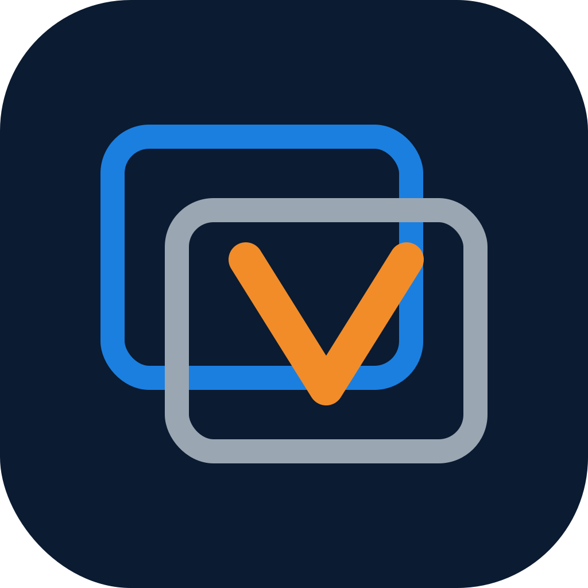
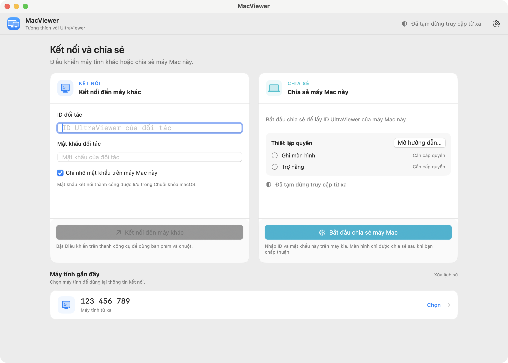

MacViewer VenturaĐiều khiển máy Windows từ máy Mac hoặc máy Linux của bạn. Control a Windows machine from your Mac or Linux machine.
Client UltraViewer mã nguồn mở cho macOS và Linux · Hỗ trợ macOS 13 Ventura trở lên · Miễn phí Open-source UltraViewer client for macOS and Linux · Supports macOS 13 Ventura and later · Free
Tải bản mới nhấtDownload the latest release Xem mã nguồnView sourceUltraViewer vốn chỉ có bản Windows. MacViewer Ventura mang khả năng đó lên máy Mac và Linux: nhập ID và mật khẩu của máy đang chạy UltraViewer là bạn thấy màn hình và điều khiển được ngay — và ngược lại, máy khác cũng kết nối vào máy Mac của bạn được khi bạn cho phép.
UltraViewer ships for Windows only. MacViewer Ventura brings it to Mac and Linux: enter the ID and password of a machine running UltraViewer and you can view and control it right away — and the other way round, others can connect to your Mac when you allow it.
Chuột, bàn phím, nhiều màn hình; chất lượng hình ưu tiên nét theo mặc định.Mouse, keyboard, multiple monitors; prefer-quality image by default.
TLS có ghim chứng thư, mật khẩu đối tác lưu trong Keychain, không thu thập dữ liệu.Pinned-certificate TLS, partner passwords in Keychain, no data collection.
Trò chuyện và đồng bộ văn bản sao chép hai chiều trong phiên.In-session chat and two-way text clipboard sync.
Bản mới được đối chiếu SHA-256 rồi cài đè tại chỗ — không cảnh báo Gatekeeper với bản cài qua app.New versions are SHA-256-verified and installed in place — no Gatekeeper prompt for in-app updates.
Lần cài đầu tiên cần mở app bằng chuột phải một lần; các lần cập nhật sau diễn ra ngay trong app.
The first install needs one right-click open; later updates happen inside the app.
Tải file MacViewer-Ventura-…-macOS.dmg ở trang Releases và kéo MacViewer.app vào thư mục Applications.Download the MacViewer-Ventura-…-macOS.dmg from Releases and drag MacViewer.app into Applications.
Mở lần đầu: chuột phải → Open → Open. (Hoặc chạy lệnh xattr -dr com.apple.quarantine /Applications/MacViewer.app)First launch: right-click → Open → Open. (Or run xattr -dr com.apple.quarantine /Applications/MacViewer.app)
Nhập ID + mật khẩu của máy đích và kết nối. Nếu để máy khác nối vào, cấp quyền Ghi màn hình và Trợ năng theo hướng dẫn trong app.Enter the target machine's ID + password and connect. To let others connect to you, grant Screen Recording and Accessibility as the app prompts.
Dùng Linux? Trong cùng trang Releases có bản MacViewer-Ventura-…-Linux.tar.gz và gói .deb cho máy Linux (x86-64), khả năng kết nối tương đương bản Mac.On Linux? The same Releases page carries the MacViewer-Ventura-…-Linux.tar.gz and .deb builds for Linux machines (x86-64), with the same connection capabilities as the Mac build.

Dự án nhỏ, không có đội kiểm thử riêng — báo cáo của bạn rất có giá trị. Gặp lỗi, hãy mở một issue theo mẫu có sẵn: chỉ cần cho biết phiên bản, triệu chứng, và kết nối bao lâu thì gặp. Muốn thử bài bản hơn — phép thử để yên 20–30 phút, phép thử phiên dài, phép thử nối lại — xem hướng dẫn báo lỗi & kiểm thử.
This is a small project with no QA team — your reports matter. If something breaks, open an issue using the template: just state your version, the symptom, and how long you were connected. For structured testing — the idle test, the long-session test, the reconnect test — see the reporting & testing guide.